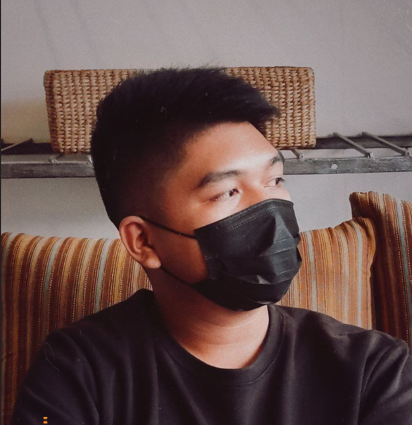

Joshua UY

Summary
A Fresh graduate from Aclc Tacloban Leyte, Philippines.With a Bachelor of Science in Information Technology focused in Computer Science from ACLC.
Education
- Preliminary : Leyte Normal University
- Secondary : ACLC College of Tacloban
- Tertiary : Bachelor of Science in Information Technology AMA Computer Learning Center College ACLC College Real St. Tacloban City
Work Experience
None
Skills
- HTML
- CSS
- MySQL
- B4A
- PHOTOSHOP
Awards And Certification
- Certificate of Participation 2021 IT Skills Competition (JAVA) at ACLC College Tacloban
- Achieving 3rd place in the 2024 IT Skills Competition (MOBILE) at ACLC College Tacloban
- Dean’s Lister for 1st Sem S.Y. 2023-2024 at ACLC College Tacloban
Others